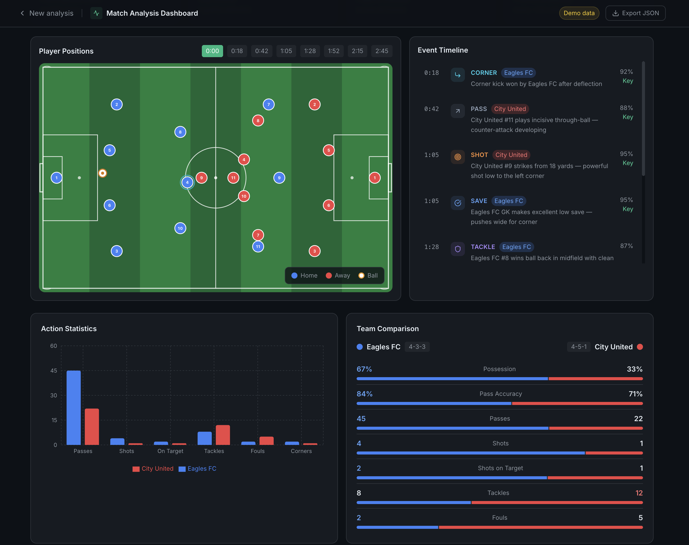
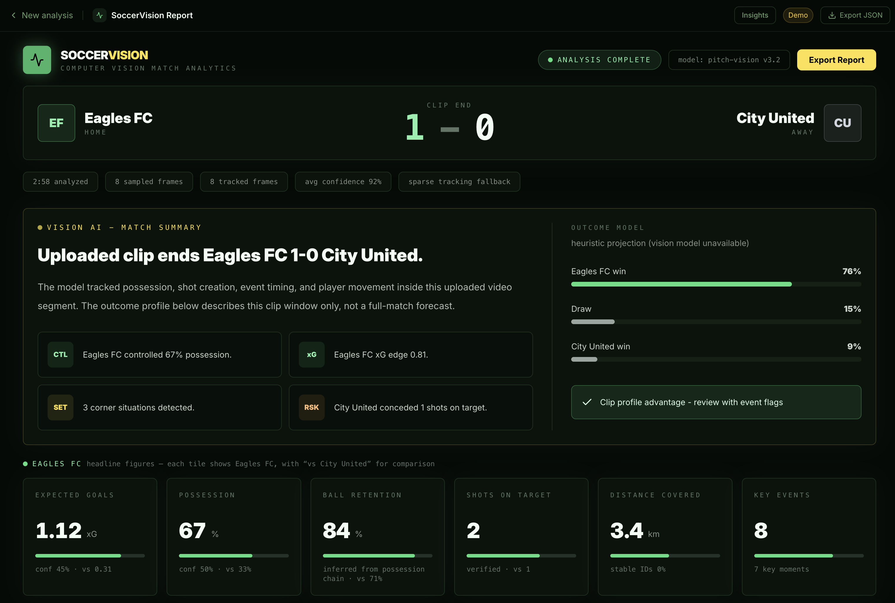
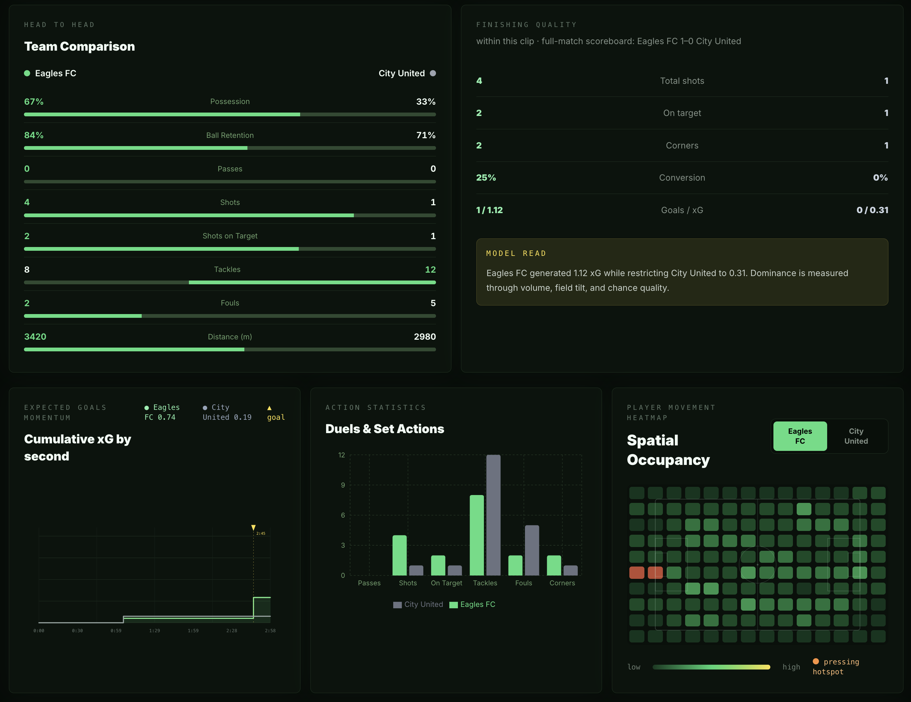

A fast-task product investigation: understand the users, map the video signals, assemble proven building blocks, build a proof of concept, and define what to validate next.
Use ML and AI to turn soccer video into player/ball data, events, metrics, and coaching insight.
I used existing models, APIs, open-source tools, public references, and internet footage to prove the workflow quickly.
Who makes decisions? What do they actually need from a tool?
Where does current data fall short? What gap is worth closing?
What already exists? Where do legacy tools and AI tools break down?
What's achievable now? What's deliberately Phase 2?
What signals live in video? How does each one become a useful output?
Which ML/AI blocks fit each job? What are their real trade-offs?
What did the POC prove? What would I validate next?
I structured the work so each part of the prompt maps to either a research decision, a working demo feature, or a next-step validation plan.
Players, ball, teams, events, pitch position, scoreboard, possession, xG, heatmaps.
Vision-language models, YOLO detection, tracking, team clustering, homography, LLM synthesis.
Small ball, camera pans, occlusion, replays, kit swaps, ambiguous events, latency, cost.
Key moments, xG, possession flow, tactical shape, density maps, coaching recommendations.
Users first, then workflow gaps, existing tools, available data, prototype, benchmark.
With more time: labeled clips, detector recall, tracking stability, event timing, coach usefulness.
Before writing a single line of code, the first question was: who actually needs this, and what do they do with it?
They make decisions about tactics, formations, and training focus. They need evidence, fast.
They receive filtered insights from coaching staff - specific clips, position feedback, development targets.
Insights before the next session, not the next day
The 3 moments that mattered - not 300 data points
Insights that map to decisions coaches already make
Not just what happened, but where and why
Coaches know something went wrong. Proving it - and showing players - takes hours they don't have.
The question isn't whether AI can help. It's whether it can be assembled in a way that fits a real coaching workflow.
Not dashboards. Decisions.
Understanding the gap between what's possible and what's being used defines where to build.
With a short task window, the responsible approach was to use credible existing pieces, learn their limits quickly, and connect them into a workflow that proves the direction.
What coaches and analysts need: fast moments, tactical context, and player-facing explanations.
Broadcast clips and internet examples for the POC; SoccerNet-style tracking and calibration data as the better benchmark path.
Claude for frame interpretation and summary; YOLO worker as the local dense-CV path when the demo is configured for it.
Turn structured JSON into field overlays, timelines, heatmaps, stats, and coaching recommendations.
Before insights, you need to understand what types of signals live inside video footage and how each one maps to something useful.
Where visible players and the ball are in the frame, with true pitch coordinates when homography succeeds.
What happens in what order - passes, tackles, shots, transitions, set pieces.
Which players belong to which team, inferred from model output, kit context, or worker-side jersey clustering.
How teams appear organized from sampled frames - line height, spacing, pressure, and shot context.
The dashboard separates strong signals from inferred ones. That matters because a coach should know whether a number came from direct visual evidence, a heuristic, or a low-confidence fallback.
Each analyzed frame gets a possession label. The team percentage is the share of non-contested frames controlled by that team.
Shots come from reviewed `shot`, `save`, and `goal` events. On-target means the event was a save or goal.
The synthesis model can score shot quality from key frames. If unavailable, the app estimates xG from shot location, angle, type, and confidence.
When a scoreboard is legible, clip goals are created only from score increases after the uploaded clip baseline.
When the YOLO worker is running, passes are tracked via countPossessionPasses() on dense frames — the ball moving to a teammate while possession stays with the same team. Claude-reviewed pass events are the fallback when the worker isn't configured.
Completed pass events are compared with turnover-like actions. The UI frames this as retention because sparse video sampling can miss failed passes.
Distance is calculated from stable player-ID displacement. It improves when the worker provides stable IDs and pitch calibration.
Player locations are converted into field-space bins. True pitch coordinates are preferred when homography succeeds.
The current app is a hybrid proof of concept: browser frame extraction, vision routes for structure, a local YOLO preprocessing path, and a final synthesis pass for coaching language.
The browser uses the Canvas API to pull frames from the video at regular intervals - no full video is sent to the server. Frames are extracted at 1280×720. Higher resolution matters: the ball becomes invisible at half that size.
The app can use Claude Vision as a fallback to analyze sampled frames: player positions, ball location as 0-100 image coordinates, possession, and visible events. The client runs bounded concurrency so a short clip can be processed without waiting on every frame serially.
The app estimates which slice of the pitch is visible for sampled frames. The YOLO worker path can go further: detect field keypoints and use homography to produce true pitch positions when calibration succeeds.
Candidate moments - potential goals, shots, corners - are pre-flagged using geometry. Claude reviews those specific windows with images to confirm or reject each. The event route also asks for scoreboard reads per supplied frame, then the app synthesizes clip-scoped goals only when the observed score increases after the baseline.
The summary route sends selected key frames and aggregated metrics to the configured summary model. It produces coaching insights, an outcome projection, per-shot Expected Goals (xG), and a 2-3 sentence narrative of the clip, with deterministic fallbacks when the model call fails.
A full map of what runs when you upload a clip - broken down by the actual files in the codebase, the AI models they call, and what each one returns.
low_confidence when Claude skips a window · Truncated JSON auto-repaired
Different stages need different capabilities. The key is matching the right model to the right task - and knowing what each one can't do.
Rich, context-aware output - but too slow and expensive at high frame rates
Fast and cheap - but produces coordinates, not insight
CV handles the volume. LLMs handle the judgment. Best of both.
xG estimates the probability that a shot results in a goal. In the current repo, the synthesis model can assign per-shot xG from key frames and visible context; when that is unavailable, the app falls back to a positional formula. With more time, this should be calibrated against a real labeled shot dataset.
I started with a dashboard that proved the data surfaces, then moved toward a more coach-ready report that explains confidence, metric sources, and the story of the clip.



The proof of concept turns a short broadcast clip into a structured SoccerVision report: score context, clip summary, outcome projection, metric cards, confidence indicators, and coach-facing insights.
I did not choose one model to do everything. I split the problem by what each tool is best at, then kept the demo honest about what is POC versus production-ready.
It is useful for interpretation, but expensive and slow for dense tracking. It also does not guarantee stable player IDs frame to frame.
YOLO gives boxes, classes, and coordinates. Coaches need explanation: why the chance mattered, what pattern repeated, and what to train next.
In a fast task, the highest-leverage move was assembling proven blocks, then identifying where a custom soccer detector would improve accuracy.
A 1-3 minute clip is enough to prove extraction, review, synthesis, and dashboard workflow before scaling to full-match processing.
Current POC: Claude fallback + optional YOLO worker. Production recommendation: YOLO/tracker/homography first, Claude second for event review and coaching synthesis.
API calls add meaningful processing time per frame. Running four frames concurrently keeps total analysis time reasonable — processing every frame serially would make the workflow impractical. Prompt caching on the Opus synthesis call avoids re-sending the same system instructions on every analysis.
Broadcast cameras pan constantly. A player in the left third of one frame appears in the right third of the next. Camera calibration smooths this - blending position estimates across frames and only snapping on large detected cuts.
Not every contact is a shot. Not every raised arm is a celebration. The candidate window system pre-flags likely moments using geometry, then Claude verifies - reducing false positives without losing true events.
The event route reports scoreboard values when legible, but goal synthesis only triggers when the score increases after the clip baseline. This avoids counting goals that happened before the uploaded clip started.
Each stage has internal checks: events are deduplicated across time and position windows, conflicts between Claude's output and geometry flags are surfaced explicitly, and synthesis insights are grounded in key frames - not inferred from stats alone. The system tags low-confidence events so they can be filtered or reviewed separately.
The POC already has internal validation built in: confidence flags, deduplication, conflict surfacing, scoreboard baseline logic. The next step is external benchmarks that turn "this works" into "a coach can trust this number."
Measure player, ball, goalkeeper, and referee precision/recall across camera angles, jersey colors, lighting, close-ups, and wide tactical shots.
Measure ID switches, track fragmentation, missed ball frames, and how well interpolation handles short ball-detection gaps.
Compare image-space locations against true pitch coordinates using keypoint homography and labeled pitch landmarks.
Benchmark passes, shots, saves, goals, corners, fouls, and scoreboard changes against hand-labeled clips.
Have analysts rate whether the recommendations are specific, evidence-backed, and useful for the next training session.
Measure processing time, API cost, GPU cost, failure rate, and whether the pipeline is fast enough for halftime or post-match review.
The demo handles short clips and proves the workflow. With more time, better data, and hosted infrastructure, I would move from proof of concept to a measurable soccer analytics pipeline.
soccana is already trained on soccer footage. The next step is fine-tuning on our own labeled clips: our broadcast angles, jersey combinations, and edge cases. More targeted data means better accuracy on the footage we actually care about.
The worker runs locally now, which works for demos and development. Hosting it on a GPU service gives teams faster turnaround, shared access, and opens up full 90-minute match processing.
Let analysts approve or correct events, then feed those corrections back into the evaluation set. That is how the system gets more accurate over time rather than staying static.
Extend from short clip uploads to full-match and multi-match analysis via ETL pipelines: player development trends, opponent scouting, and league-wide benchmarking.